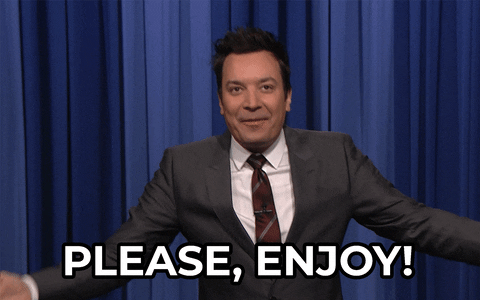

BELLLO!!!! welcome to the Minions fanpage!!
Not only is it a minion fanpage hehe banana but it is also all about showcasing examples of common web image formats we can use for our websites!! So if you love minions you'll love these images and learn the reasons why they were used.
Minions rules the world so let them rule your world for the next couple of minutes!!
